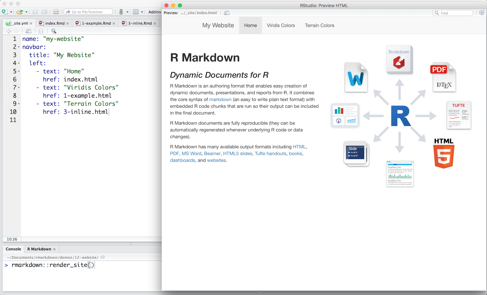
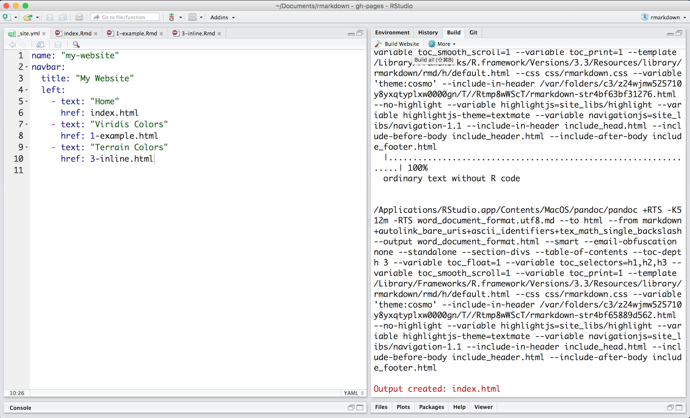

Render collections of R Markdown documents into a website with the rmarkdown::render_site function. Each .Rmd file becomes a page of the site. Here we build a website from these files.

Each website requires
_site.yml, which provides the global YAML header for the siteindex.Rmd, which provides the content for the home page of your website.Execute the rmarkdown::render_site function from within the directory containing your files to build _site, a directory of files ready to deploy as a standalone static website.
Better yet, create an RStudio Project for your directory. RStudio will add a Build tab to the IDE that you can use to build and preview your site.

Learn more about generating websites with R Markdown at R Markdown Websites.